06 - Базові інструменти прогнозування
Прогнозування часових рядів
КНЕУ::ІІТЕ
10/25/22
Процес охайного (tidy) прогнозування
Етапи
Процес можна розбити на такі етапи:
Підготовка даних
Візуалізація
Специфікація моделі
Оцінювання параметрів моделі
Оцінювання якості та точності
Побудова прогнозів
Tidy-підготовка
gdppc <- global_economy %>%
mutate(GDP_per_capita = GDP/Population) %>%
select(Year, Country, GDP, Population, GDP_per_capita)
gdppc# A tsibble: 15,150 x 5 [1Y]
# Key: Country [263]
Year Country GDP Population GDP_per_capita
<dbl> <fct> <dbl> <dbl> <dbl>
1 1960 Afghanistan 537777811. 8996351 59.8
2 1961 Afghanistan 548888896. 9166764 59.9
3 1962 Afghanistan 546666678. 9345868 58.5
4 1963 Afghanistan 751111191. 9533954 78.8
5 1964 Afghanistan 800000044. 9731361 82.2
6 1965 Afghanistan 1006666638. 9938414 101.
7 1966 Afghanistan 1399999967. 10152331 138.
8 1967 Afghanistan 1673333418. 10372630 161.
9 1968 Afghanistan 1373333367. 10604346 130.
10 1969 Afghanistan 1408888922. 10854428 130.
# … with 15,140 more rowsВізуалізація

Оцінка моделі
Функція model навчає модель на обраних даних
# A mable: 3 x 2
# Key: Country [3]
Country trend_model
<fct> <model>
1 Afghanistan <TSLM>
2 Albania <TSLM>
3 Algeria <TSLM>mable - це таблиця моделей, де кожен запис відповідає за конктретну підігнану модель
Прогнозування
# A fable: 7 x 5 [1Y]
# Key: Country, .model [3]
Country .model Year GDP_per_capita .mean
<fct> <chr> <dbl> <dist> <dbl>
1 Afghanistan trend_model 2018 N(526, 9653) 526.
2 Afghanistan trend_model 2019 N(534, 9689) 534.
3 Afghanistan trend_model 2020 N(542, 9727) 542.
4 Albania trend_model 2018 N(4716, 476419) 4716.
5 Albania trend_model 2019 N(4867, 481086) 4867.
6 Albania trend_model 2020 N(5018, 486012) 5018.
7 Algeria trend_model 2018 N(4410, 643094) 4410.fable - таблиця прогнозів з точковими та інтервальними прогнозами.
Візуалізація прогнозів
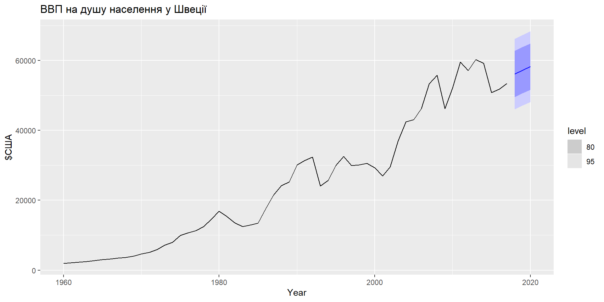Прості методи прогнозування
MEAN(y): Метод на основі середнього
Прогноз усіх майбутніх значень дорівнює середньому з вибірки \(\{y_1,\dots,y_T\}\).
Прогнози: \(\hat{y}_{T+h|T} = \bar{y} = (y_1+\dots+y_T)/T\)
NAIVE(y): Наївний метод
Прогноз дорівнює останньому значенню з вибірки.
Прогнози: \(\hat{y}_{T+h|T} =y_T\).
SNAIVE(y ~ lag(m)): Сезонний наївний метод
Прогнози дорівнюють останньому значенню минулого сезону.
Прогнози: \(\hat{y}_{T+h|T} =y_{T+hm(k+1)}\), де \(m=\) сезонний період, а \(k\) – ціла частина \((h -1)/m\).
RW(y ~ drift()): Дріфтовий метод
Прогноз дорівнює останньому значенню плюс середня зміна.
Прогнози:
\[\hat{y}_{T+h|T} = y_{T} + \frac{h}{T-1}\sum_{t=2}^T (y_t-y_{t-1})\\ = y_T + \frac{h}{T-1}(y_T -y_1)\]
- Еквівалентно екстраполяції лінії, проведеної між першим і останнім спостереженнями.
RW(y ~ drift()): Дріфтовий метод
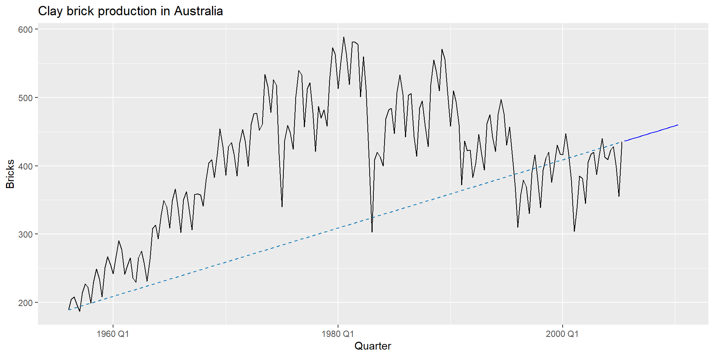Оцінювання моделі
Функція model навчає модель на обраних даних
# A mable: 1 x 4
Seasonal_naive Naive Drift Mean
<model> <model> <model> <model>
1 <SNAIVE> <NAIVE> <RW w/ drift> <MEAN>Побудова прогнозів
# A fable: 80 x 4 [1Q]
# Key: .model [4]
.model Quarter Bricks .mean
<chr> <qtr> <dist> <dbl>
1 Seasonal_naive 2005 Q3 N(428, 2336) 428
2 Seasonal_naive 2005 Q4 N(397, 2336) 397
3 Seasonal_naive 2006 Q1 N(355, 2336) 355
4 Seasonal_naive 2006 Q2 N(435, 2336) 435
5 Seasonal_naive 2006 Q3 N(428, 4672) 428
6 Seasonal_naive 2006 Q4 N(397, 4672) 397
7 Seasonal_naive 2007 Q1 N(355, 4672) 355
8 Seasonal_naive 2007 Q2 N(435, 4672) 435
9 Seasonal_naive 2007 Q3 N(428, 7008) 428
10 Seasonal_naive 2007 Q4 N(397, 7008) 397
# … with 70 more rowsВізуалізація прогнозів
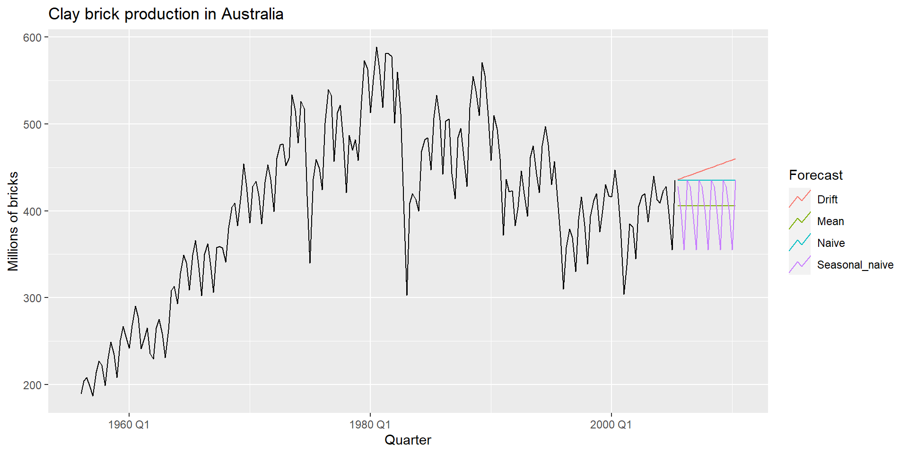Ціна акцій Facebook на закриття
# Дані для навчання моделі
fb_stock <- gafa_stock %>%
filter(Symbol == "FB") %>%
mutate(trading_day = row_number()) %>%
update_tsibble(index=trading_day, regular=TRUE)
# Побудова, оцінювання і прогнозування
fb_stock %>%
model(
Mean = MEAN(Close),
Naive = NAIVE(Close),
Drift = RW(Close ~ drift())
) %>%
forecast(h=42) %>%
autoplot(fb_stock, level = NULL) +
labs(title = "Facebook closing stock price", y="$US") +
guides(colour=guide_legend(title="Forecast"))Ціна акцій Facebook на закриття
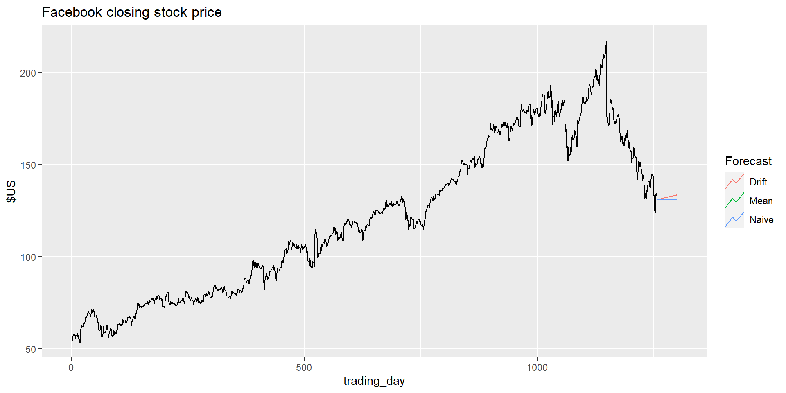Діагностика залишків моделей
Модельні значення (fitted values)
- \(\hat{y}_{t|t-1}\) – це прогноз \(y_t\) на основі спостережень \(y_1,\dots,y_{t-1}\).
- Ми називаємо це «модельними значеннями» (fitted values).
- Часто прогнози не відповідають дійсності, оскільки параметри оцінюються за всіма даними.
Наприклад:
- \(\hat{y}_{t} = \bar{y}\) для середнього методу.
- \(\hat{y}_{t} = y_{t-1} + (y_{T}-y_1)/(T-1)\) для методу дріфту.
Залишки моделей
Залишки в прогнозуванні: різниця між спостережуваним модельними значеннями: \(e_t = y_t-\hat{y}_{t|t-1}\)
Припущення: 1. \(\{e_t\}\) некорельовані. Якщо вони ні, то інформація залишається в залишках, які слід використовувати при обчисленні прогнозів. 2. \(\{e_t\}\) мають середнє нульове значення. Якщо ні, то прогнози мають зміщення.
Корисні властивості (для розподілів та довірчих інтервалів): 3. \(\{e_t\}\) мають постійну дисперсію. 4. \(\{e_t\}\) мають нормальний розподіл.
Ціна акцій Facebook на закриття
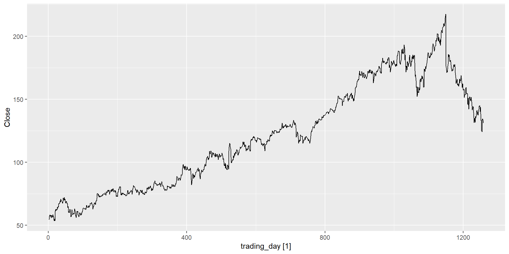Ціна акцій Facebook на закриття
# A tsibble: 1,258 x 7 [1]
# Key: Symbol, .model [1]
Symbol .model trading_day Close .fitted .resid .innov
<chr> <chr> <int> <dbl> <dbl> <dbl> <dbl>
1 FB NAIVE(Close) 1 54.7 NA NA NA
2 FB NAIVE(Close) 2 54.6 54.7 -0.150 -0.150
3 FB NAIVE(Close) 3 57.2 54.6 2.64 2.64
4 FB NAIVE(Close) 4 57.9 57.2 0.720 0.720
5 FB NAIVE(Close) 5 58.2 57.9 0.310 0.310
6 FB NAIVE(Close) 6 57.2 58.2 -1.01 -1.01
7 FB NAIVE(Close) 7 57.9 57.2 0.720 0.720
8 FB NAIVE(Close) 8 55.9 57.9 -2.03 -2.03
9 FB NAIVE(Close) 9 57.7 55.9 1.83 1.83
10 FB NAIVE(Close) 10 57.6 57.7 -0.140 -0.140
# … with 1,248 more rowsЦіна акцій Facebook на закриття
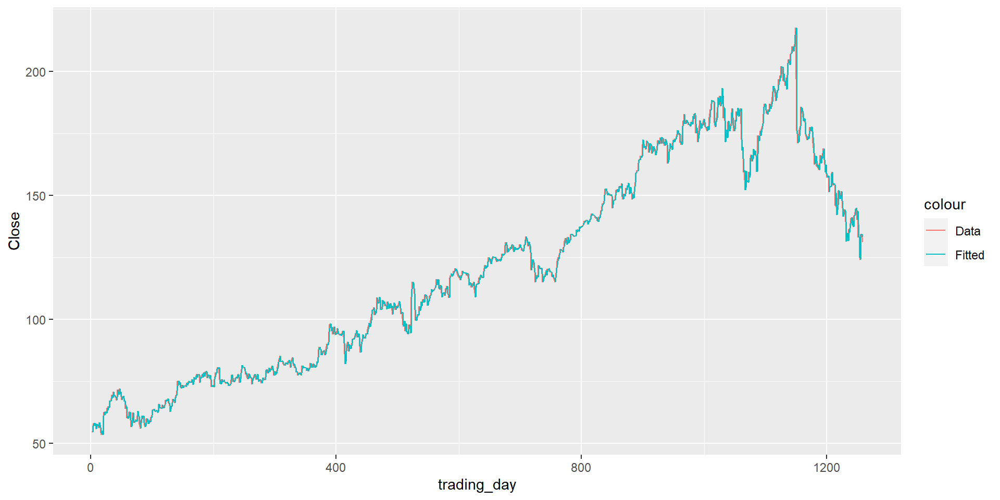Ціна акцій Facebook на закриття
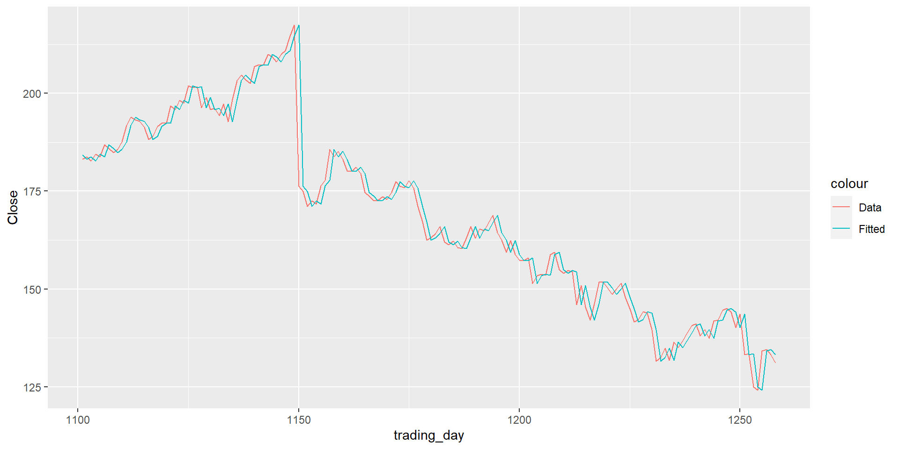Ціна акцій Facebook на закриття
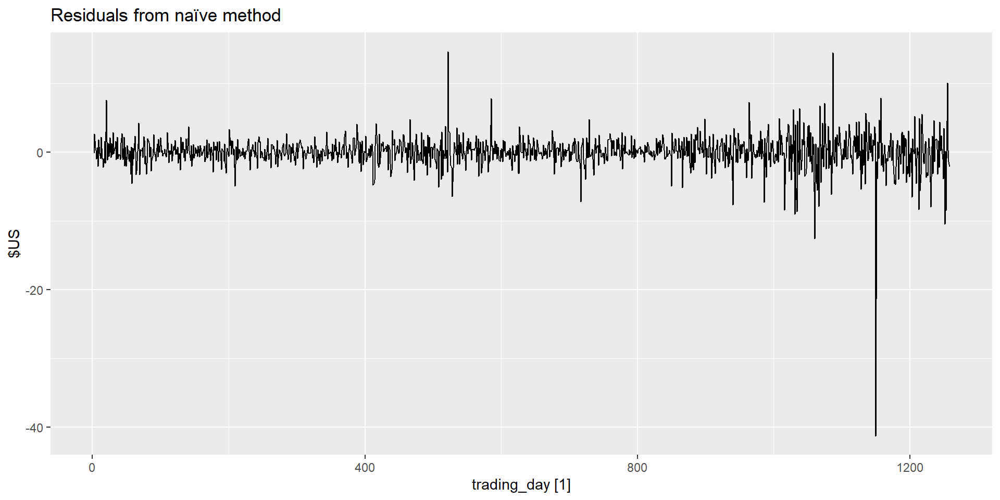Ціна акцій Facebook на закриття
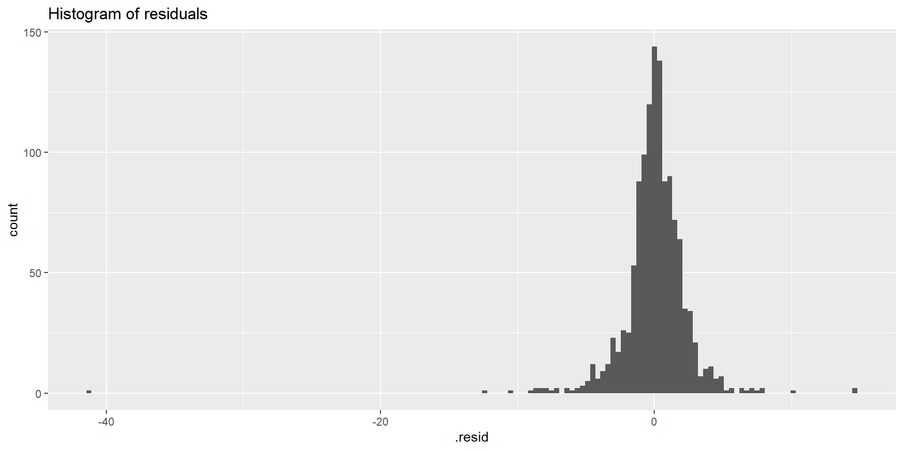Ціна акцій Facebook на закриття
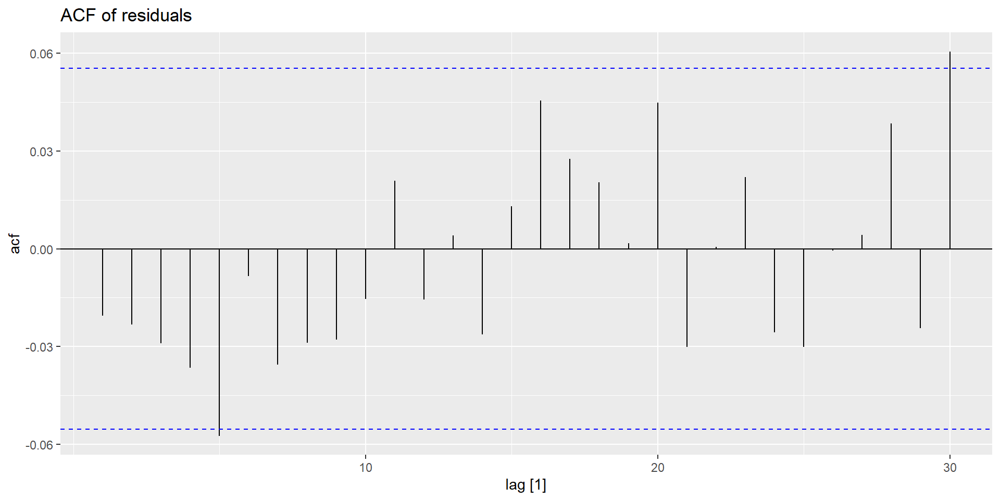Функція gg_tsresiduals()

ACF залишків
Ми припускаємо, що залишками є білим шумом (некорельований, середнє нульове значення, постійна дисперсія). Якщо вони ні, то в залишках залишається інформація, яку слід використовувати при обчисленні прогнозів.
Таким чином, стандартна діагностика залишків полягає в перевірці ACF залишків методу прогнозування.
Ми очікуємо, що вони виглядатимуть як білий шум.
Портманто-тести
Тест Бокса-Пирса
Розглянемо весь набір значень \(r_{k}\) і розробимо тест, щоб побачити, чи значно відрізняється набір від нульового набору.
\[Q = T \sum_{k=1}^\ell r_k^2\] де \(\ell\) – максимальний лаг, яке розглядається, а \(T\) – кількість спостережень.
Якщо кожен \(r_k\) близький до нуля, \(Q\) буде маленьким.
Якщо деякі значення \(r_k\) великі (позитивні чи негативні), \(Q\) буде великими.
Мої вподобання: \(\ell=10\) для несезонних даних, \(h=2m\) для сезонних даних.
Тест Бокса-Пирса
- Якщо дані є БШ, \(Q^*\) має \(\chi^2\) розподіл із \((\ell - K)\) ступенями свободи, де \(K=\) к-ть параметрів у моделі.
- При застосуванні до необроблених даних встановіть \(K=0\).
lag\(= \ell\),dof\(= K\)
Розподіл прогнозів
Прогноз \(\hat{y}_{T+h|T}\) – це (зазвичай) середнє значення умовного розподілу \(y_{T+h} \mid y_1, \dots, y_{T}\).
Більшість моделей часових рядів дають нормально розподілені прогнози.
Розподіл прогнозу описує ймовірність спостереження будь-якого майбутнього значення.
Розподіл прогнозів
Припускаючи, що залишки нормальні, некорельовані, sd = \(\hat\sigma\):
Модель середнього: \(\hat{y}_{T+h\|T} \sim N(\bar{y}, (1 + 1/T)\hat{\sigma}^2)\)
Наївна модель: \(\hat{y}_{T+h\|T} \sim N(y_T, h\hat{\sigma}^2)\)
Сезонна наївна модель: \(\hat{y}_{T+h\|T} \sim N(y_{T+h-m(k+1)}, (k+1)\hat{\sigma}^2)\)
Модель дріфту: \(\hat{y}_{T+h\|T} \sim N(y_T + \frac{h}{T-1}(y_T - y_1),h\frac{T+h}{T}\hat{\sigma}^2)\)
де \(k\) – ціла частина \((h-1)/m\).
Зауважте, що коли \(h=1\) і \(T\) великі, усі вони дають однакову приблизну дисперсію прогнозу: \(\hat{\sigma}^2\).
Довірчі інтервали
Довірчий інтервал прогнозу дає область, в межах якої ми очікуємо, що \(y_{T+h}\) буде лежати з заданою ймовірністю.
Якщо припустити, що помилки прогнозу розподіляються нормально, тоді 95% ДІ становить: \[\hat{y}_{T+h|T} \pm 1.96 \hat\sigma_h\] де \(\hat\sigma_h\) - це стандартне відхилення \(h\)-кроків розподілу.
Довірчі інтервали
# A tsibble: 80 x 5 [1Q]
# Key: .model [4]
.model Quarter Bricks .mean `95%`
<chr> <qtr> <dist> <dbl> <hilo>
1 Seasonal_naive 2005 Q3 N(428, 2336) 428 [333.2737, 522.7263]95
2 Seasonal_naive 2005 Q4 N(397, 2336) 397 [302.2737, 491.7263]95
3 Seasonal_naive 2006 Q1 N(355, 2336) 355 [260.2737, 449.7263]95
4 Seasonal_naive 2006 Q2 N(435, 2336) 435 [340.2737, 529.7263]95
5 Seasonal_naive 2006 Q3 N(428, 4672) 428 [294.0368, 561.9632]95
6 Seasonal_naive 2006 Q4 N(397, 4672) 397 [263.0368, 530.9632]95
7 Seasonal_naive 2007 Q1 N(355, 4672) 355 [221.0368, 488.9632]95
8 Seasonal_naive 2007 Q2 N(435, 4672) 435 [301.0368, 568.9632]95
9 Seasonal_naive 2007 Q3 N(428, 7008) 428 [263.9292, 592.0708]95
10 Seasonal_naive 2007 Q4 N(397, 7008) 397 [232.9292, 561.0708]95
# … with 70 more rowsДовірчі інтервали
Точкові прогнози не дають адекватної оцінки прогнозів без вимірювання невизначеності (наприклад, довірчих інтервалів).
Довірчі інтервали прогнозування вимагають стохастичної моделі (з випадковими залишками тощо).
Для більшості моделей довірчі інтервали прогнозування стають ширшими зі збільшенням горизонту прогнозу.
Використовуйте аргумент “рівень”, щоб контролювати покриття ДІ.
Перевірте залишки, перш ніж вірити їм.
Зазвичай ДІ занадто вузькі через невраховану невизначеність.
Прогнозування з перетвореннями
Моделювання з перетвореннями
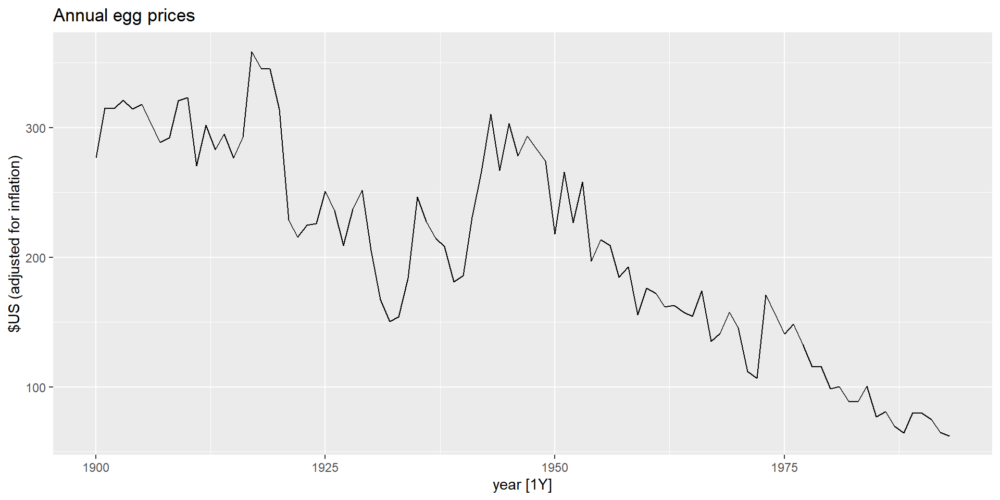Моделювання з перетвореннями
Перетворення, використані до залежноъ змынноъ, будуть автоматично перетворені назад під час побудови моделі.
Прогнозування з перетвореннями
# A fable: 50 x 4 [1Y]
# Key: .model [1]
.model year eggs .mean
<chr> <dbl> <dist> <dbl>
1 RW(log(eggs) ~ drift()) 1994 t(N(4.1, 0.018)) 61.8
2 RW(log(eggs) ~ drift()) 1995 t(N(4.1, 0.036)) 61.4
3 RW(log(eggs) ~ drift()) 1996 t(N(4.1, 0.055)) 61.0
4 RW(log(eggs) ~ drift()) 1997 t(N(4.1, 0.074)) 60.6
5 RW(log(eggs) ~ drift()) 1998 t(N(4.1, 0.093)) 60.2
6 RW(log(eggs) ~ drift()) 1999 t(N(4, 0.11)) 59.8
7 RW(log(eggs) ~ drift()) 2000 t(N(4, 0.13)) 59.4
8 RW(log(eggs) ~ drift()) 2001 t(N(4, 0.15)) 59.0
9 RW(log(eggs) ~ drift()) 2002 t(N(4, 0.18)) 58.6
10 RW(log(eggs) ~ drift()) 2003 t(N(4, 0.2)) 58.3
# … with 40 more rowsПрогнозування з перетвореннями
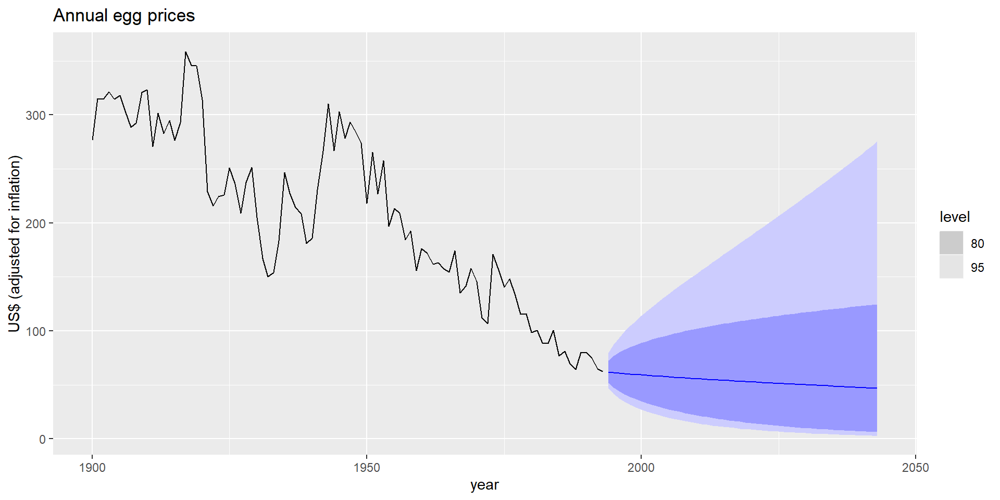Корегування зміщення (bais)
Точкові прогнози зі зворотним перетворенням є медіанами.
Довірчі інтервали для прогнозів зі зворотним перетворенням є правильними.
Зворотнє перетворення середнього
Нехай \(X\) має середнє значення \(\mu\) і дисперсію \(\sigma^2\).
Нехай \(f(x)\) — функція зворотного перетворення, а \(Y=f(X)\).
Розкладання ряду Тейлора про \(\mu\): \[f(X) = f(\mu) + (X-\mu)f'(\mu) + \frac{1}{2}(X-\mu)^2f''(\mu).\]
\[E[Y] = E[f(X)] = f(\mu) + \frac12 \sigma^2 f''(\mu)\]
Корегування зміщення (bais)
Зворотне перетворення Бокса-Кокса: \[y_t = \left\{\begin{array}{ll} \exp(w_t) & \quad \lambda = 0; \\ (\lambda W_t+1)^{1/\lambda} & \quad \lambda \ne 0. \end{array}\right.\]
\[f(x) = \begin{cases} e^x & \quad\lambda=0;\\ (\lambda x + 1)^{1/\lambda} & \quad\lambda\ne0. \end{cases}\]
\[f(x) = \begin{cases} e^x & \quad\lambda=0;\\ (1-\lambda)(\lambda x + 1)^{1/\lambda-2} & \quad\lambda\ne0. \end{cases}\]
\[E[Y] = \begin{cases} e^\mu\left[1+\frac{\sigma^2}{2}\right] & \quad\lambda=0;\\ (\lambda \mu + 1)^{1/\lambda}\left[1+\frac{\sigma^2(1-\lambda)}{2(\lambda\mu+1)^2}\right] & \quad\lambda\ne0. \end{cases}\]
Корегування зміщення (bais)
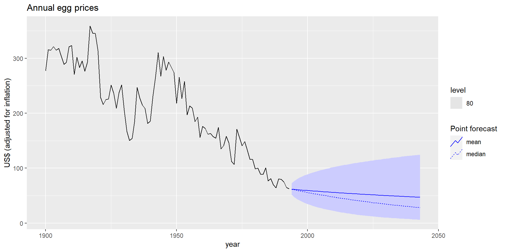Прогнозування та декмпозиція
Постановка
\[y_t = \hat{S}_t + \hat{A}_t\]
- \(\hat{A}_t\) - созонно-скорегована компонента
- \(\hat{S}_t\) - сезонна компонента.
–
- Прогнозуємо \(\hat{S}_t\) за допомогою SNAIVE.
- Прогнозуємо \(\hat{A}_t\) за допомогою несезонного методу часових рядів.
- Об’єдуємо прогнози \(\hat{S}_t\) і \(\hat{A}_t\), щоб отримати прогнози залежної змінної.
Зайнятість у розрібній торгівлі США
us_retail_employment <- us_employment %>%
filter(year(Month) >= 1990, Title == "Retail Trade") %>%
select(-Series_ID)
us_retail_employment# A tsibble: 357 x 3 [1M]
Month Title Employed
<mth> <chr> <dbl>
1 1990 янв Retail Trade 13256.
2 1990 фев Retail Trade 12966.
3 1990 мар Retail Trade 12938.
4 1990 апр Retail Trade 13012.
5 1990 май Retail Trade 13108.
6 1990 июн Retail Trade 13183.
7 1990 июл Retail Trade 13170.
8 1990 авг Retail Trade 13160.
9 1990 сен Retail Trade 13113.
10 1990 окт Retail Trade 13185.
# … with 347 more rowsЗайнятість у розрібній торгівлі США
# A tsibble: 357 x 6 [1M]
Month Employed trend season_year remainder season_adjust
<mth> <dbl> <dbl> <dbl> <dbl> <dbl>
1 1990 янв 13256. 13288. -33.0 0.836 13289.
2 1990 фев 12966. 13269. -258. -44.6 13224.
3 1990 мар 12938. 13250. -290. -22.1 13228.
4 1990 апр 13012. 13231. -220. 1.05 13232.
5 1990 май 13108. 13211. -114. 11.3 13223.
6 1990 июн 13183. 13192. -24.3 15.5 13207.
7 1990 июл 13170. 13172. -23.2 21.6 13193.
8 1990 авг 13160. 13151. -9.52 17.8 13169.
9 1990 сен 13113. 13131. -39.5 22.0 13153.
10 1990 окт 13185. 13110. 61.6 13.2 13124.
# … with 347 more rowsЗайнятість у розрібній торгівлі США
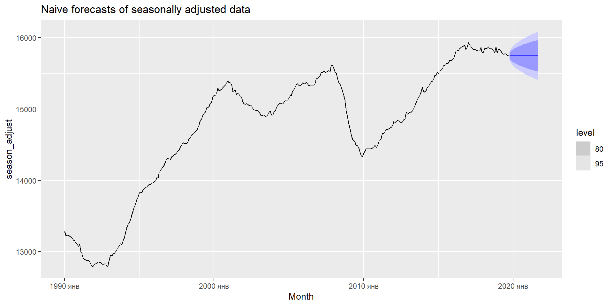Зайнятість у розрібній торгівлі США
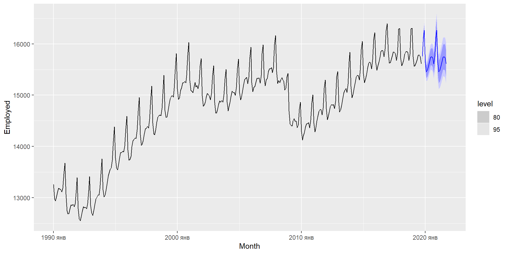Моделі декомпозиції
decomposition_model() створює модель декомпозиції
- Необхідно обрати метод для прогнозування
season_adjust. - Сезонний наївний метод використовується за замовчуванням для “сезонних” компонентів.
- Відхилення прогнозів сезонно скоригованого ряду та сезонності сумуються.
Оцінювання точності прогнозів
Модель, яка добре відповідає навчальній вибірці, не обов’язково буде добре прогнозувати.
Ідеальну модель можна отримати, використовуючи модель з достатньою кількістю параметрів.
Перенавчання (over-fitting) моделі так само погано, як і недонавчання (underfitting).
Тестовий набір не приймає участі при побудові моделі.
Точність прогнозу базується лише на тестовому наборі.
Похибка прогнозів
Похибка прогнозів - це різниця між реальними та прогнозними значеннями.
\[e_{T+h} = y_{T+h} - \hat{y}_{T+h|T},\] де \(\{y_1,\dots,y_T\}\) - навчальна вибірка
- На відміну від залишків, помилки прогнозу на тестовому наборі включають багатокрокові прогнози.
- Це справжні помилки прогнозу, оскільки тестові дані не використовуються при обчисленні \(\hat{y}_{T+h|T}\).
Вимірювання точності прогнозу

Вимірювання точності прогнозу
\(y_{T+h}=(T+h)\)-ому спостереженню, \(h=1,\dots,H\)
\(\hat{y}_{T+h|T}=\) це прогноз, на основі \(T\) спостережень.
\(e_{T+h} = y_{T+h} - \hat{y}_{T+h|T}\)
\[MAE = \text{mean}(|e_{T+h}|)\] \[MSE = \text{mean}(e_{T+h}^{2})\] \[RMSE = \sqrt{\text{mean}(e_{T+h}^{2})}\] \[MAPE = 100*\text{mean}(\frac{|e_{T+h}|}{|y_{T+h}|})\]
MAE, MSE, RMSE залежать від масштабу.
MAPE не залежить від масштабу, але є розумним, лише якщо \(y_t\gg 0\) для всіх \(t\), а \(y\) має природний нуль.
Mean Absolute Scaled Error
\[\text{MASE} = \text{mean}(|e_{T+h}|/Q)\] де \(Q\) – cійка міра масштабу часового ряду \(\{y_t\}\).
Запропонована Hyndman and Koehler (IJF, 2006).
Для несезонних часових рядів: \[Q = (T-1)^{-1}\sum_{t=2}^T |y_t-y_{t-1}|\]
Mean Absolute Scaled Error
\[\text{MASE} = \text{mean}(|e_{T+h}|/Q)\] де \(Q\) – cійка міра масштабу часового ряду \(\{y_t\}\).
Запропонована Hyndman and Koehler (IJF, 2006).
Для сезонних часових рядів: \[Q = (T-m)^{-1}\sum_{t=m+1}^T |y_t-y_{t-m}|\]
Вимірювання точності прогнозу
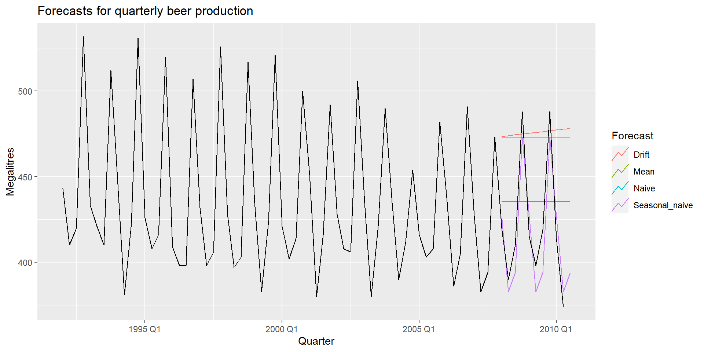Вимірювання точності прогнозу
recent_production <- aus_production %>%
filter(year(Quarter) >= 1992)
train <- recent_production %>%
filter(year(Quarter) <= 2007)
beer_fit <- train %>%
model(
Mean = MEAN(Beer),
Naive = NAIVE(Beer),
Seasonal_naive = SNAIVE(Beer),
Drift = RW(Beer ~ drift())
)
beer_fc <- beer_fit %>%
forecast(h = 10)Вимірювання точності прогнозу
| .model | .type | RMSE | MAE | MAPE | MASE |
|---|---|---|---|---|---|
| Drift | Training | 65.31337 | 54.76795 | 12.178793 | 3.829927 |
| Mean | Training | 43.62858 | 35.23438 | 7.886776 | 2.463942 |
| Naive | Training | 65.31511 | 54.73016 | 12.164154 | 3.827284 |
| Seasonal_naive | Training | 16.78193 | 14.30000 | 3.313685 | 1.000000 |
| .model | .type | RMSE | MAE | MAPE | MASE |
|---|---|---|---|---|---|
| Drift | Test | 64.90129 | 58.87619 | 14.577487 | 4.1172161 |
| Mean | Test | 38.44724 | 34.82500 | 8.283390 | 2.4353147 |
| Naive | Test | 62.69290 | 57.40000 | 14.184424 | 4.0139860 |
| Seasonal_naive | Test | 14.31084 | 13.40000 | 3.168503 | 0.9370629 |
Крос-валідація у часових рядах
Крос-валідація у часових рядах

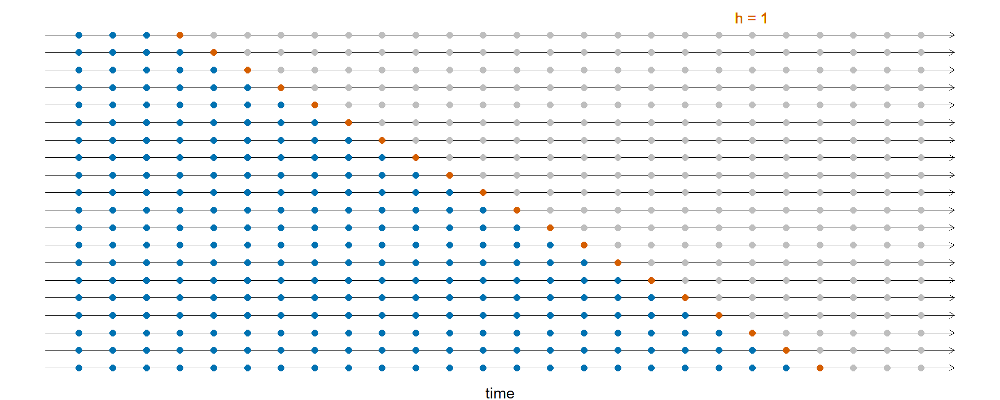
Крос-валідація у часових рядах

Крос-валідація у часових рядах

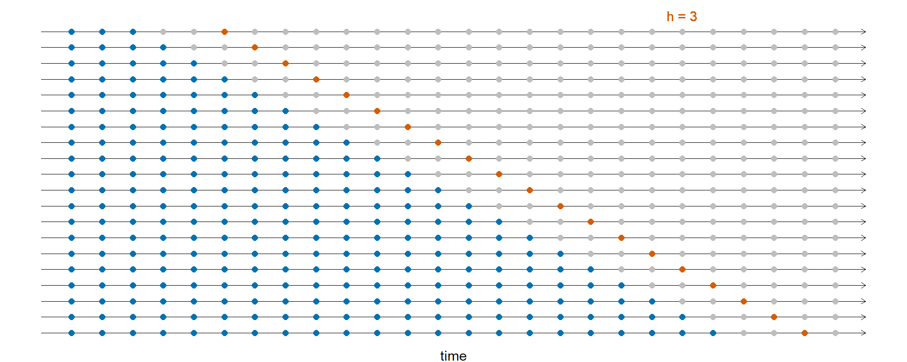
Крос-валідація у часових рядах
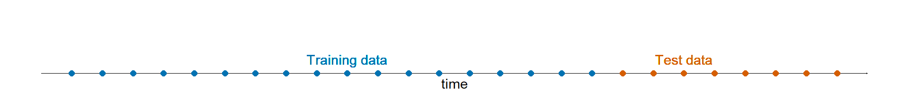
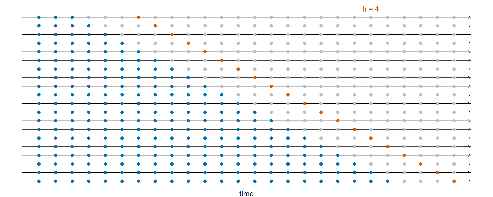
- Точність прогнозу усереднюється по тестовим вибіркам.
Крос-валідація у часових рядах
Можна розглянути три основні типи CV у часових рядах:
- Розтягнення (stretch): на кожному кроці вікно навчальної вибірки розтягується на фіксоване значення.
- Ковзання (slide): переміщує вікно фіксованої довжини по даним.
- Плитка (tile): переміщує вікно фіксованої довжини без перекриття.
Три функції для tsibble:
stretch_tsibble(),slide_tsibble(),tile_tsibble().
Для CV часових рядів найчастіше використовуються розтягнення
Крос-валідація у часових рядах
Розтягення з мінімальною довжиною 3, зростаючи на 1 кожен крок.
# A tsibble: 790,650 x 4 [1]
# Key: .id [1,255]
Date Close trading_day .id
<date> <dbl> <int> <int>
1 2014-01-02 54.7 1 1
2 2014-01-03 54.6 2 1
3 2014-01-06 57.2 3 1
4 2014-01-02 54.7 1 2
5 2014-01-03 54.6 2 2
6 2014-01-06 57.2 3 2
7 2014-01-07 57.9 4 2
# … with 790,643 more rowsКрос-валідація у часових рядах
Побудова моделі RW w/ drift для кожного вікна:
# A mable: 1,255 x 3
# Key: .id, Symbol [1,255]
.id Symbol `RW(Close ~ drift())`
<int> <chr> <model>
1 1 FB <RW w/ drift>
2 2 FB <RW w/ drift>
3 3 FB <RW w/ drift>
4 4 FB <RW w/ drift>
# … with 1,251 more rowsКрос-валідація у часових рядах
Побудова прогнозів на один крок вперед по всім моделям
# A fable: 1,255 x 5 [1]
# Key: .id, Symbol [1,255]
.id Symbol trading_day Close .mean
<int> <chr> <dbl> <dist> <dbl>
1 1 FB 4 N(58, 5.8) 58.4
2 2 FB 5 N(59, 2.7) 59.0
3 3 FB 6 N(59, 1.9) 59.1
4 4 FB 7 N(58, 2.2) 57.7
# … with 1,251 more rowsКрос-валідація у часових рядах
| Type | RMSE | MAE | MAPE |
|---|---|---|---|
| Cross-validation | 2.418172 | 1.468729 | 1.265941 |
| Training | 2.413595 | 1.464813 | 1.261279 |
Гарний спосіб вибрати найкращу модель прогнозування — це знайти модель з найменшим RMSE, обчисленим за допомогою перехресної перевірки часових рядів.
Дякую за увагу!
ihor.miroshnychenko@kneu.ua